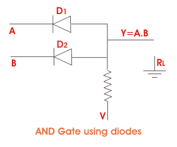
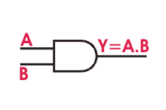
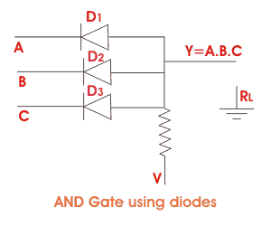
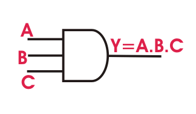
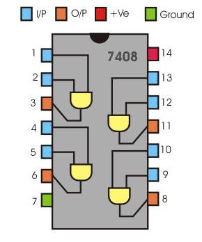
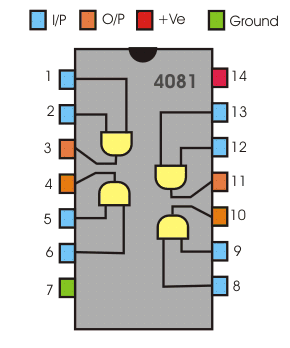

In digital electronics there are several logical gates which works or operates on different logical operations, say logical addition, logical multiplication etc. AND Gate is a logical gate which is widely used having two or more inputs and a single output. This gate works or operates on logical multiplication rules. In this gate if either of the inputs is low (0), then the output is also low, but if all the inputs are high (1) the output will also be high (1). There are many integrated circuit which works on this logic we will come to it later. First of all let us gather some idea how output with respect to input is observed in case of AND Gate.
Let A and B be the inputs and Y is respective output, then
Here (.) denotes the AND operations. When the AND gate have more input variables such as let A, B and C are the input variables and Y is the output. Then,
Now, let us concentrate on two circuits describing AND operation.
Y= A.B
Here (.) denotes the AND operations. When the AND gate have more input variables such as let A, B and C are the input variables and Y is the output. Then,
Y= A.B.C
Now, let us concentrate on two circuits describing AND operation.

Fig:- 1. circuit diagram using diode and Fig:- 2 Electric circuit using switch
First of all let have a look on figure 1. Here the circuit has two inputs where at each input a diode is connected.
For A diode D1 is connected and for B diode D2 is connected. Y is the output. Now, observe, Where A is low (0) for diode D1 is not conducting. B is also low (0) for which D2 is also not conducting. Thus the respective output will also be low (0).
Next when A is low (0) D1 is again not conducting but if B is high (1) D2 conducts but as one of the input is low the respective output will also be low (0).
Similarly when A is high (1) D1 conducts but D2 in non conducting as B is low (0). The output is again low (0) as one of the input is low.
At last when both the inputs are high (1) i.e both the diodes are conducting the output is also high (1). This is how AND Gate circuit works. To make your concept more clear let's explain it by electrical switching circuit.
For A diode D1 is connected and for B diode D2 is connected. Y is the output. Now, observe, Where A is low (0) for diode D1 is not conducting. B is also low (0) for which D2 is also not conducting. Thus the respective output will also be low (0).
Next when A is low (0) D1 is again not conducting but if B is high (1) D2 conducts but as one of the input is low the respective output will also be low (0).
Similarly when A is high (1) D1 conducts but D2 in non conducting as B is low (0). The output is again low (0) as one of the input is low.
At last when both the inputs are high (1) i.e both the diodes are conducting the output is also high (1). This is how AND Gate circuit works. To make your concept more clear let's explain it by electrical switching circuit.
In this circuit there are two switches connected in series. For Input A switch S1 and for input B switch is S2. Now switch will be closed when the input signal will be high(1) and opened if the input signal is low(0).
Now see if A is low (0) and B is also low (0) both the switches are open and the respective output will be low (0) as the signal gets not path to flow to the output.
Next when A is high (1) and B is also low (0) switch S1 will be closed and S2 will be opened. Thus again the signal from the input is not getting an path, So the output is again low(0)
Similarly when A is low (0) and B is high (1) switch S1 is opened and S2 is closed respectively. But is output will still be low as the input signal is again not getting any path for flowing to the output.
Now see if A is low (0) and B is also low (0) both the switches are open and the respective output will be low (0) as the signal gets not path to flow to the output.
Next when A is high (1) and B is also low (0) switch S1 will be closed and S2 will be opened. Thus again the signal from the input is not getting an path, So the output is again low(0)
Similarly when A is low (0) and B is high (1) switch S1 is opened and S2 is closed respectively. But is output will still be low as the input signal is again not getting any path for flowing to the output.
Lastly when both the inputs are high i.e. A is 1 and B is also 1, the switches S1 and S2 both are closed. Here the input signal gets a path to flow to the output i.e. the output signal will be high(1).
Truth table of AND Gate given below can make your idea more clear.
| First Input | Second Input | Output | Symbol of AND Gate |
|---|---|---|---|
| A | B | Y= A.B |  |
| 0 | 0 | 0 | |
| 0 | 1 | 0 | |
| 1 | 0 | 0 | |
| 1 | 1 | 1 | Here A, B are inputs and Y is output |
Here A and B are the inputs and Y is the output.
i) At first A=0 and B=0, thus Y = A.B ⇒ Y=0.0 ⇒ Y=0, therefore the output is also low (0).
ii) Next A=0 and B=1, thus Y=A.B ⇒ Y=0.1 ⇒ Y=0, therefore the output is also low(0).
iii) When A=1 and B=0, Output Y=A.B ⇒ Y=1.0 ⇒ Y=0, this time also he output is low(0).
iv) Lastly A=1 and B=1, thus Y=A.B ⇒ Y=1.1 ⇒ Y=1, therefore the output is also high (1).
i) At first A=0 and B=0, thus Y = A.B ⇒ Y=0.0 ⇒ Y=0, therefore the output is also low (0).
ii) Next A=0 and B=1, thus Y=A.B ⇒ Y=0.1 ⇒ Y=0, therefore the output is also low(0).
iii) When A=1 and B=0, Output Y=A.B ⇒ Y=1.0 ⇒ Y=0, this time also he output is low(0).
iv) Lastly A=1 and B=1, thus Y=A.B ⇒ Y=1.1 ⇒ Y=1, therefore the output is also high (1).
The same idea can be extended in this type of gate with more than two inputs.

| Input | Output | ||
|---|---|---|---|
| A | B | C | Y= A.B.C |
| 0 | 0 | 0 | 0 |
| 0 | 0 | 1 | 0 |
| 0 | 1 | 0 | 0 |
| 0 | 1 | 1 | 0 |
| 1 | 0 | 0 | 0 |
| 1 | 0 | 1 | 0 |
| 1 | 1 | 0 | 0 |
| 1 | 1 | 1 | 1 |
In the above diode circuit when all the diodes will be conduction i.e all the input signals will be high the respective output, will be high too. If either of the input is low the output will be low. This idea can be made clear from the truth table given below.
Look at the truth table very carefully. See the output of the last row is only high (1) all other rows are having output low (0). This is became excerpt the last row all other rows have at least one low (0). In the last row all the input are high (1) thus the output is also high. As said earlier it works on logical AND operation rules it proves that how many the number input may be the output is dependent on the high or low signal.
IC 7408

For AND Gate IC number in TTL is 7408. 7408 is Quad 2- input IC where four gates are present together. Let us have a look on the internal diagram of 7408.
Here pln 1, 2 are the inputs of the first gate whose respective output is 3. Again 4 and 5 are the inputs of the second gate whose output is at pin 6. The inputs of fourth is pin 12 and 13 and pin 11 is its output. Pin 14 is the supply input which can be maximum 5.2 volt D.C. if input voltage be more than this it may cause damage to the IC.
IC 4081
In CMOS logic i.e complementary MOSFET logic I.C number of AND Gate is 4081. This IC also has two inputs and one respective output. In this IC there are also 4 gates together. Now see the below internal diagram of this circuit to make it more clear.

Pin 1 and 2 are the inputs of the first gate whose output is in number 3. Again Pin 5 and 6 are the inputs of the second gate whose output is at Pin 4. pi number 7 is grounded. Pin 8 and 9 are the inputs of third gate whose output is at pin 10. Again pin 13 and 12 are the inputs of fourth AND gate whose output is at pin number 11. Pin 13 and 12 are the inputs of fourth AND Gate whose output is at pin number 11. Pin number 14 is power supply where maximum 5.2 volt D.C supply can be given to activate the IC. Here too if more voltage is given if may damage the IC. Inter circuit of CMOS and TTL differs from each other which must be noticed carefully.
 by
by